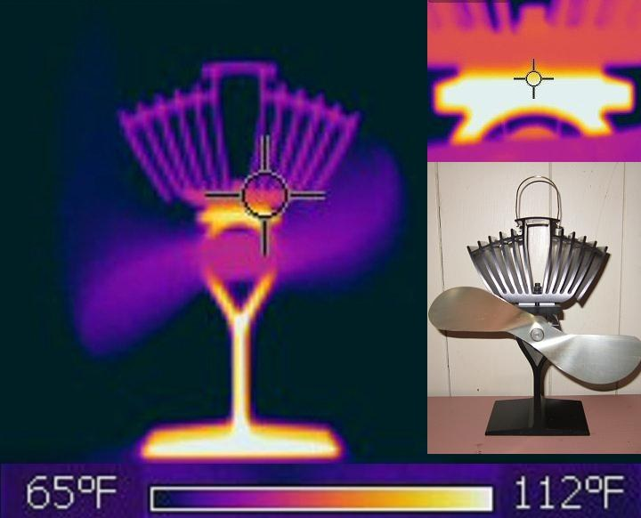
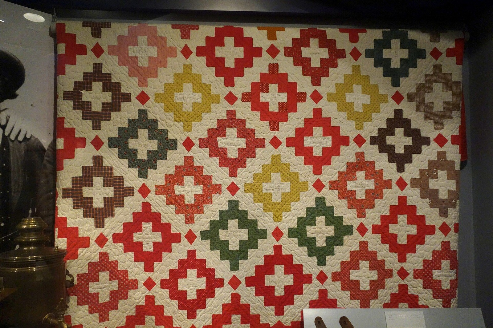
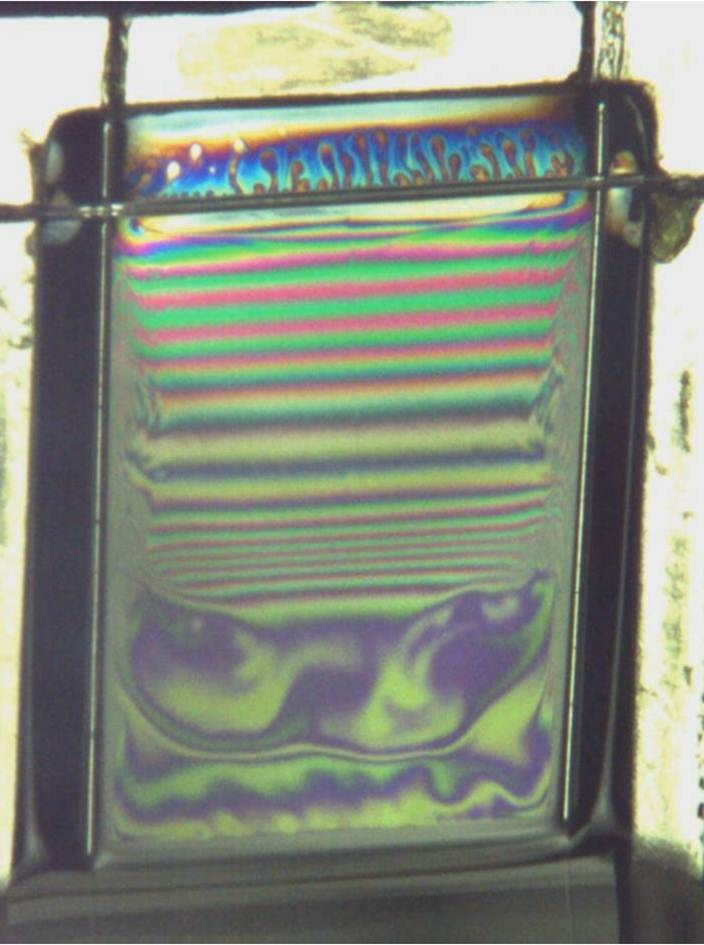
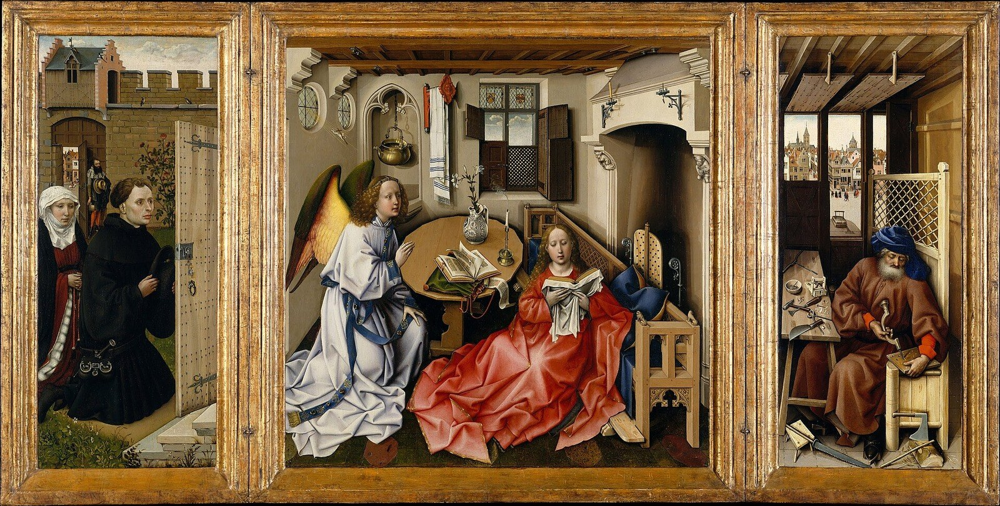
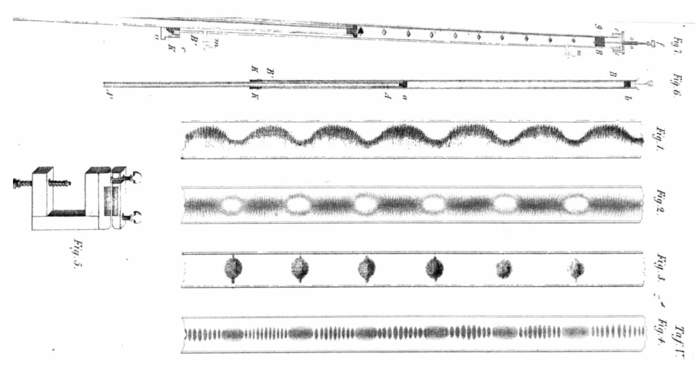
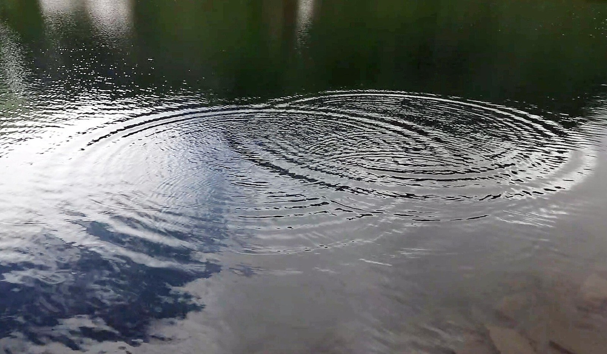
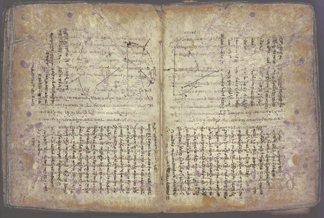

第40回
青い池を、黄と橙の縁が、幾重にも取り巻いている。
Carsten Steger（2022年、グランド・プリズマティック・スプリングの空撮）／CC BY-SA 4.0／Wikimedia Commons（横長に切り出した）
第6部は偏微分方程式。未知の関数が2つ以上の変数をもつと、微分方程式は「定数」ではなく「関数」を自由に含むようになる。この回では、$u_t$、$u_{xx}$ という書き方を一つずつ分解して読み、2階線形の方程式を楕円型・放物型・双曲型に仕分け（二次曲線の判別式と同じ形）、型ごとに必要な初期条件・境界条件（ディリクレ・ノイマン・ロバン）が違うことを、熱・波・ラプラスの3つの方程式で確かめる。解法は第41回以降。
前提は、第11回（偏微分 $\partial$・高階偏微分・順序交換）と第24回（発散・ラプラシアン）である。ほかに、第12回（連鎖律。3.5 の変数変換で使う）、第23回（勾配・法線。4.4 で使う）、第28回・第29回（常微分方程式・初期条件・2階線形）、第36回（フーリエ級数。5.4 でだけ名前を出す）を使う。
範囲は、方程式を読み、仕分け、条件を課すところまで。解く方法（変数分離・固有関数展開・ダランベールの解）は第41〜43回で扱う。解の例は、「代入して確かめる」ために出す。
応用数学Ⅱ（AM2）の第12回（偏微分方程式の分類と解法）に、この回の分類（判別式 $D=b^2-ac$）の別の書き方がある。本教材は 3.2 で、その書き方との対応を示す。
最初に、この回で新しく説明する記号と、前の回で説明済みの記号を分けて並べる。右の列の「→」で説明のある場所へ飛べる。
| 記号 | 読み方 | ざっくりした意味 | 説明 |
|---|---|---|---|
| PDE、偏微分方程式 | へんびぶんほうていしき、ピー・ディー・イー | 未知関数の偏導関数を含む方程式 | →1.2 |
| $u_t$、$u_{xx}$、$u_{xt}$（添字による偏微分） | ユー・ティー、ユー・エックス・エックス、ユー・エックス・ティー | $u$ を $t$ で偏微分／$x$ で2回偏微分／$x$ で偏微分してから $t$ で偏微分 | →1.3 |
| 省略の段階（偏導関数の書き方） | ― | $\dfrac{\partial^2u}{\partial x^2}(x,t)$ から $u_{xx}$ まで | →1.3 |
| 階数、線形、同次（PDEで） | かいすう、せんけい、どうじ | 最高の微分の回数／未知関数について1次／右辺が $0$ | →1.4 |
| 熱拡散率 $k$ | ねつかくさんりつ | 熱の広がりやすさ。単位は $\mathrm{m^2/s}$ | →2.1 |
| 楕円型・放物型・双曲型、$B^2-4AC$ | だえんがた・ほうぶつがた・そうきょくがた | 2階線形PDEの3つの型と、それを決める判別式 | →3.2 |
| 省略の段階（2階線形PDEの一般形） | ― | 低階の項まで書いた形から、主要部だけの形まで | →3.2 |
| 初期条件 $u(x,0)=f(x)$ | しょきじょうけん | 時刻 $0$ での $u$（と $u_t$）を関数で与える条件 | →4.2 |
| 境界条件、ディリクレ・ノイマン・ロバン | きょうかいじょうけん | 領域の端で $u$ の値／傾き／その組み合わせを与える条件 | →4.3 |
| $\Omega$、$\partial\Omega$、$\dfrac{\partial u}{\partial n}$ | オメガ、オメガの境界、ユーのエヌ方向微分 | 領域／その境界／境界での外向き法線方向の微分 | →4.4 |
| 適切な問題（解の存在・一意・連続依存） | てきせつなもんだい | 条件を課して解が1つに決まり、条件の小さな誤差が解の大きな誤差にならない | →5.1 |
| 重ね合わせ | かさねあわせ | 線形・同次な問題では、解の和も解 | →5.4 |
| 記号 | 意味 | 初出 |
|---|---|---|
| 偏微分 $\dfrac{\partial f}{\partial x}$、$f_x$ | ほかの変数を固定して $x$ だけで微分 | 第11回、$f_x$、固定の添字 |
| 高階偏微分、順序交換 $f_{xy}=f_{yx}$ | 2回以上の偏微分、微分の順序を入れ替えてよい条件 | 第11回 |
| 連鎖律 | 合成関数の偏微分 | 第12回 |
| 勾配 $\nabla u$、$\nabla$（ナブラ） | $u$ が最も増える向きと割合を表すベクトル | 勾配、ナブラ |
| 方向微分、法線ベクトル | ある向きに進んだときの変化率／面に垂直な単位ベクトル | 方向微分、法線 |
| 発散 $\nabla\cdot\mathbf q$、ラプラシアン $\nabla^2u=\Delta u$ | 湧き出しの量／$\nabla\cdot(\nabla u)$ | 発散、ラプラシアン |
| 調和関数 | $\Delta u=0$ をみたす関数 | 第24回 |
| 領域の境界 $\partial D$ | 領域の縁 | 第26回 |
| 常微分方程式、階数、初期条件・初期値問題 | 1変数の未知関数の方程式／最高の微分の回数／出発点を与えて解を1本に決める | ODE、階数、初期値問題 |
| 一般解 | 任意定数を含む、すべての解を表す式 | 第28回 |
| フーリエ級数 | 周期関数を $\sin,\cos$ の和で表す | 第36回 |
| 添字 $a_n$ | 番号を右下に小さく書く | 第1回 |
| 定義の記号 $:=$ | 左の名前を右で決める | 第1回 |
PHOTO 1｜現実

赤外線の画像では、温度の高い所ほど、明るく写る。
Zaereth（2011年、赤外線カメラで撮った、熱で回る扇風機）／CC0／Wikimedia Commons（縮小した）
MITATE 1｜見立て

小さな四角が、縦横に並んで、一枚の布になる。
Daderot（2013年、1849年のパッチワークのキルト。ウィスコンシン歴史博物館）／CC0／Wikimedia Commons（縮小した）
第28回までの微分方程式は、未知の関数が 1つの変数だけをもっていた。たとえばばねの位置 $y(t)$ は、時刻 $t$ だけで決まる。だから「ある瞬間の、ばねの1か所の位置」を調べれば足りた。
では、金属の細い棒の温度はどうか。棒のどの場所を測るかによって温度が違い、同じ場所でも時刻によって違う。温度は「場所 $x$」と「時刻 $t$」の2つの変数で決まるので、$u(x,t)$ と書く。弦の揺れ、太鼓の膜、川の中の汚染物質の濃度も同じである。
2変数の関数の変化は、第11回の偏微分で測った。「場所を固定して時間で微分」（その場所の温度の変化の速さ）と「時刻を固定して場所で微分」（その瞬間の温度の傾き）の2つがある。この2種類の変化率の間の関係を方程式にしたものが、偏微分方程式である。
①読み方：「へんびぶんほうていしき」。英語 partial differential equation の頭文字で「ピー・ディー・イー」とも言う。
②日本語での意味：2つ以上の変数をもつ未知の関数について、その偏導関数の間の関係を述べた等式。この等式を満たす関数 $u$ を「解」という。
③省略していない書き方（棒の温度の例）：
$$\frac{\partial u}{\partial t}(x,t)\ =\ k\,\frac{\partial^2u}{\partial x^2}(x,t)\qquad(0\lt x\lt L,\ t\gt0)$$
ここで、$u(x,t)$ は場所 $x$・時刻 $t$ での温度（未知の関数）、$k$ は正の定数（2.1 で意味を説明する）、$L$ は棒の長さ、$\partial$ は第11回の偏微分の記号である。かっこの中の「$0\lt x\lt L,\ t\gt0$」は、「この等式が成り立つ $x$ と $t$ の範囲」を表す。
④使われる場所：熱伝導・拡散（機械工学では熱伝達・流体）、弦・膜・梁の振動（機械力学）、電磁気学（電位・電磁波）、流体力学。
最小の数値例で、「解である」とはどういうことか確かめる。$k=3$ とし、$u(x,t)=x^2+6t$ を調べる。
① $t$ で偏微分（$x$ を定数とみる）：$\dfrac{\partial u}{\partial t}=6$。
② $x$ で偏微分：$\dfrac{\partial u}{\partial x}=2x$。
③ もう一度 $x$ で偏微分：$\dfrac{\partial^2u}{\partial x^2}=2$。
④ 右辺：$k\cdot\dfrac{\partial^2u}{\partial x^2}=3\cdot2=6$。
⑤ 点 $(x,t)=(1,1)$ で確かめる：$u=1+6=7$。左辺 $6$、右辺 $6$。どの $(x,t)$ でも①と④が等しいので、$u=x^2+6t$ は $u_t=3u_{xx}$ の解である。
まとめると、「解である」ことは、代入して両辺が全ての点で等しくなることで確かめる。この回の解の例は、すべてこの方法で確かめている。
$\dfrac{\partial^2u}{\partial x^2}$ を毎回書くと、方程式が長くなって形が見えない。そこで偏微分方程式の本では添字の書き方を使う。第11回の $f_x$ と同じ流儀を、2階以上に伸ばしたものである。
①読み方：$u_t$ は「ユー・ティー」、$u_{xx}$ は「ユー・エックス・エックス」、$u_{xt}$ は「ユー・エックス・ティー」。
②日本語での意味：右下に書いた文字は、その変数で偏微分するという指示。並べて書いたら、その回数だけ、左から順に微分する。
③省略していない書き方：
$$u_t\ :=\ \frac{\partial u}{\partial t},\qquad u_{xx}\ :=\ \frac{\partial}{\partial x}\!\left(\frac{\partial u}{\partial x}\right)=\frac{\partial^2u}{\partial x^2},\qquad u_{xt}\ :=\ \frac{\partial}{\partial t}\!\left(\frac{\partial u}{\partial x}\right)=\frac{\partial^2u}{\partial t\,\partial x}$$
$:=$ は第1回の「左の名前を右で決める」記号。$u_{xt}$ は、先に $x$、あとで $t$ で微分する（添字を左から読む）。分数の形 $\dfrac{\partial^2u}{\partial t\,\partial x}$ では、右から読むので、順番の読み方が逆になる。
④使われる場所：偏微分方程式の本・論文はほぼこの書き方（熱方程式 $u_t=ku_{xx}$、波動方程式 $u_{tt}=c^2u_{xx}$、ラプラス方程式 $u_{xx}+u_{yy}=0$）。
| 段階 | 書き方 | 省いたもの | 省いても誤解が起きない理由（と、起きる場面） |
|---|---|---|---|
| S0 | $\dfrac{\partial^2u}{\partial x^2}(x,t)$ | （省略なし） | 「$u$ を $x$ で2回偏微分した関数の、点 $(x,t)$ での値」と、変数まで全部書いた形。 |
| S1 | $\dfrac{\partial^2u}{\partial x^2}$ | 引数 $(x,t)$ | 等式が全ての $(x,t)$ で成り立つ、と決めてあれば、点を書かなくても同じ意味。注意：特定の点での値を言いたいときは、引数（や $\bigl|_{x=1}$）を書く。 |
| S2 | $\partial_x^2u$ | 分数の形（分母の $\partial x^2$） | 「$\partial_x$ は、$x$ で偏微分する操作」と決めたから。分子分母の位置が意味を持たない、操作の記号として使う書き方（第11回の流派の違い）。 |
| S3 | $u_{xx}$ | 演算の記号 $\partial$ | 添字が「その変数で偏微分」を表す、と決めたから。注意：添字が変数の名前のときだけ。$u_n$（第 $n$ 項）のような番号の添字（第1回）とは別の意味で、文脈で見分ける。 |
熱方程式を同じ段階で並べると：S0 $\dfrac{\partial u}{\partial t}(x,t)=k\,\dfrac{\partial^2u}{\partial x^2}(x,t)$ → S1 $\dfrac{\partial u}{\partial t}=k\,\dfrac{\partial^2u}{\partial x^2}$ → S3 $u_t=ku_{xx}$。この回では、読みやすさのために S3 を主に使う。意味が曖昧になりそうな場面では、S1 に戻して書く。
図1.1 を見る。階段の各段で何を消したか、同じ式が3通りに書かれる様子を並べた。
混合偏導関数 $u_{xt}$ と $u_{tx}$ は、第11回の順序交換により、$u_{xt}$ と $u_{tx}$ の2階偏導関数が連続なら等しい。この回に出てくる解は、すべてこの条件を満たすので、どちらの順に書いても同じとして扱う。数値で確かめる。$u=x^2t^3$ とする。
① $u_x=2xt^3$。
② $u_{xt}=\dfrac{\partial}{\partial t}(2xt^3)=6xt^2$。
③ 逆順：$u_t=3x^2t^2$、$u_{tx}=\dfrac{\partial}{\partial x}(3x^2t^2)=6xt^2$。
$u_x$ を $u\times x$ と読むのは誤り。右下の $x$ は掛け算の相手ではなく、「$x$ で偏微分する」という指示である。同じ理由で、$u_{xx}$ は「$u$ に $x$ を2回掛ける」でも「$u$ の 2乗」でもない。また $u_x$ を「$x$ を固定して」と読むのも誤り。固定するのは$x$ 以外の変数で、動かすのが $x$ である（第11回）。
方程式を読む前に、まず3つの質問で仕分けする。これは常微分方程式の階数の考え方を、そのまま偏微分に延ばしたものである。
①読み方：「かいすう」「せんけい」「どうじ」（「同次」は「斉次」ともいう）。
②日本語での意味：階数は、式に現れる偏導関数のうち、微分の回数が最大のものの回数。線形は、未知関数 $u$ とその偏導関数が、それぞれ1次で、互いに掛け合わされないこと（掛けてよいのは $x,t$ だけの関数）。同次は、線形な方程式を「$u$ を含む項 = 右辺」の形にしたとき、右辺が $0$ であること。
③省略していない書き方：線形な方程式は、微分の操作 $\mathcal L$ を使って $\mathcal L[u]=f(x,t)$ と書ける。たとえば熱方程式なら $\mathcal L[u]:=u_t-ku_{xx}$。線形とは、すべての関数 $u,v$ と定数 $\alpha,\beta$ について
$$\mathcal L[\alpha u+\beta v]\ =\ \alpha\,\mathcal L[u]+\beta\,\mathcal L[v]$$
が成り立つこと。同次とは $f\equiv0$（右辺がすべての点で $0$）のこと。
④使われる場所：解の重ね合わせ（5.4）、解法の選び方（第41回以降）。
6つの方程式を仕分けた。「階数」は、最高の微分の回数を数える。
| 方程式 | 階数 | 線形？ | 同次？ | 理由 |
|---|---|---|---|---|
| $u_t=ku_{xx}$ | 2 | 線形 | 同次 | $u_t-ku_{xx}=0$。どの項も $u$ の偏導関数の1次式 |
| $u_t=ku_{xx}+\sin x$ | 2 | 線形 | 非同次 | $u_t-ku_{xx}=\sin x$ で、右辺が $0$ でない |
| $u_{tt}=c^2u_{xx}$ | 2 | 線形 | 同次 | $u_{tt}-c^2u_{xx}=0$ |
| $u_{xx}+u_{yy}=0$ | 2 | 線形 | 同次 | ラプラス方程式 |
| $u_t+u\,u_x=0$ | 1 | 非線形 | ― | $u\cdot u_x$ は、未知の関数どうしの積 |
| $u_t=u_{xx}+u^3$ | 2 | 非線形 | ― | $u^3$ は $u$ について1次でない |
$u_t+uu_x=0$ が非線形なのを、定義の式で確かめる。$\mathcal L[u]:=u_t+uu_x$、$u=v=x$（$t$ によらない）、$\alpha=\beta=1$ とする。
① $\mathcal L[u+v]=\mathcal L[2x]=0+2x\cdot2=4x$。
② $\mathcal L[u]+\mathcal L[v]=(0+x\cdot1)+(0+x\cdot1)=2x$。
③ $4x\ne2x$ なので、$\mathcal L[u+v]=\mathcal L[u]+\mathcal L[v]$ が成り立たない。線形でない。
図1.3 を見る。3つの質問を順にたどると、仕分けが決まる。
常微分方程式 $y'=0$ の一般解は $y=C$（任意定数 $C$ が1つ）だった（第28回の一般解）。同じ「導関数が $0$」でも、偏微分方程式では事情が変わる。
例1：$u_x=0$（$u(x,y)$ は2変数）。$x$ で偏微分すると $0$ とは、$y$ を固定したとき $x$ を動かしても $u$ が変わらない、ということ。だから $u$ は$y$ だけで決まる。
$$u(x,y)\ =\ g(y)\qquad(g\text{ は任意の微分可能な関数})$$
確かめ：$g(y)=y^2$ なら $u=y^2$。$u_x=0$ ✓。$g(y)=\sin y$ なら $u=\sin y$。$u_x=0$ ✓。$g$ にはどんな関数でも入る。定数 $C$ ではなく、関数 $g$ そのものが自由である。図1.2 を見る。
例2：$u_{xy}=0$（先に $x$、あとで $y$ で微分して $0$）。
① $\dfrac{\partial}{\partial y}(u_x)=0$。
② よって $u_x$ は $y$ によらず、$x$ だけの関数 $a(x)$。
③ $x$ で積分する。$\int a(x)\,dx$ を $f(x)$ とおくと、$u=f(x)+g(y)$。
確かめ：$u=x^3+\cos y$ なら $u_x=3x^2$、$u_{xy}=0$ ✓。
一般に、$n$ 階の常微分方程式の一般解は $n$ 個の任意定数を含み、偏微分方程式の一般解は任意関数を含む。したがって、解を1つに決めるために与える条件も「数」ではなく「関数」（たとえば初期の温度の分布全体）になる。これが 4 章の初期条件・境界条件の出発点である。
「偏微分方程式は、常微分方程式より任意定数が増えるだけ」という見方は誤り。任意定数は有限個（$C_1,C_2$ など）だが、任意関数 $g(y)$ は無限個の自由度（$y$ の値ごとに自由）をもつ。だから、条件も関数で与えないと解は決まらない。
分類の前に、解の様子がまったく違う3つの方程式を見る。どれも2階・線形・同次である（1.4）。
PHOTO 2｜現実

枠にはった膜が、縞の色に光っている。
Emmanuelle rio slr（2011年、石けん膜）／CC BY-SA 3.0／Wikimedia Commons（縮小した）
MITATE 2｜見立て

三枚の絵が、枠でつながって、ひとつの祭壇画になる。
ロベルト・カンピンの工房『メロードの祭壇画』（Commons の年記は1427〜1432年ごろ）／Public domain／Wikimedia Commons（縮小した）
導く。細い棒（断面積 $S$）の、$x$ から $x+\Delta x$ までの小さな区間を考える。
①読み方：$k$ は「ケー」（熱拡散率）、$\kappa$ は「カッパ」（熱伝導率）、$c$ は比熱、$\rho$ は「ロー」（密度）、$q$ は熱流束。
②日本語での意味：$\kappa$ は材料の熱の通しやすさ、$c$ は1 kg を 1 K 上げるのに要る熱、$\rho$ は単位体積あたりの質量、$q(x,t)$ は断面を、$x$ の増える向き（右向き）に、1秒・単位面積あたり流れる熱。$k$ は、$\kappa$ を $c\rho$ で割ったもの。
③省略していない書き方：$k:=\dfrac{\kappa}{c\,\rho}$。単位は $\dfrac{\mathrm{W/(m\cdot K)}}{\mathrm{J/(kg\cdot K)}\cdot\mathrm{kg/m^3}}=\mathrm{m^2/s}$。
④使われる場所：熱伝導（機械工学）。値の例は、銅で約 $1\times10^{-4}\ \mathrm{m^2/s}$、水で約 $1.4\times10^{-7}\ \mathrm{m^2/s}$（目安。値は文献によって少し違う）。
① 区間の中の熱の量は、$c\rho\,u\,S\,\Delta x$ である。
② 熱の量の増える速さは、$c\rho\,u_t\,S\,\Delta x$。
③ 熱は、左の面 $x$ から $S\,q(x,t)$ だけ入り、右の面 $x+\Delta x$ から $S\,q(x+\Delta x,t)$ だけ出る。
④ 熱の収支：$c\rho\,u_t\,S\,\Delta x=S\,q(x,t)-S\,q(x+\Delta x,t)$。
⑤ 両辺を $S\,\Delta x$ で割る：$c\rho\,u_t=-\dfrac{q(x+\Delta x,t)-q(x,t)}{\Delta x}$。
⑥ $\Delta x\to0$：$c\rho\,u_t=-q_x$。
⑦ フーリエの法則（実験則）：$q=-\kappa\,u_x$。
⑧ ⑥に代入：$c\rho\,u_t=\kappa\,u_{xx}$。
⑨ 両辺を $c\rho$ で割る：$u_t=k\,u_{xx}$。
図2.4 を見る。小区間の熱の出入りを描いた。
多次元への拡張。2次元・3次元では、⑥の $q_x$ が熱流束ベクトル $\mathbf q$ の発散 $\nabla\cdot\mathbf q$ になり、⑦が $\mathbf q=-\kappa\nabla u$（勾配）になる。⑧は $c\rho\,u_t=-\nabla\cdot\mathbf q=\kappa\,\nabla\cdot(\nabla u)$、すなわち
$$u_t\ =\ k\,\nabla^2u\ =\ k\,\Delta u$$
となる。右辺はラプラシアン（勾配の発散）。1次元では $\Delta u=u_{xx}$ だから、上の ⑨ と一致する。
$u_{xx}$ の符号が、温度の動きを決める。$u_{xx}$ の意味を、差分で見る。$x$ の左右 $h$ だけ離れた点の温度を使う。
① 右半分の傾き：$u_x\!\left(x+\tfrac h2\right)\approx\dfrac{u(x+h)-u(x)}{h}$。
② 左半分の傾き：$u_x\!\left(x-\tfrac h2\right)\approx\dfrac{u(x)-u(x-h)}{h}$。
③ 傾きの変化の割合：$u_{xx}(x)\approx\dfrac{1}{h}\left[\dfrac{u(x+h)-u(x)}{h}-\dfrac{u(x)-u(x-h)}{h}\right]=\dfrac{u(x+h)-2u(x)+u(x-h)}{h^2}$。
④ 分子を書き換える：$u(x+h)-2u(x)+u(x-h)=2\left[\dfrac{u(x+h)+u(x-h)}{2}-u(x)\right]$。つまり、$u_{xx}\approx\dfrac{2}{h^2}\bigl[(\text{左右の平均})-u(x)\bigr]$。
数値で確かめる。$u=x^2$、$x=1$、$h=0.5$：$\dfrac{1.5^2-2\cdot1^2+0.5^2}{0.5^2}=\dfrac{2.25-2+0.25}{0.25}=\dfrac{0.5}{0.25}=2$。$u_{xx}=2$ に一致 ✓。
したがって熱方程式 $u_t=ku_{xx}$ は、「左右の平均より自分が低ければ温度が上がり、高ければ下がる」と読める。山は削られ、谷は埋まり、温度はなまる。図2.5 を見る。
解の例。$n$ を正の整数とし、$u(x,t)=e^{-kn^2t}\sin(nx)$ を考える。
① $u_t=-kn^2\,e^{-kn^2t}\sin(nx)$。
② $u_x=n\,e^{-kn^2t}\cos(nx)$、$u_{xx}=-n^2\,e^{-kn^2t}\sin(nx)$。
③ $ku_{xx}=-kn^2e^{-kn^2t}\sin(nx)$。①と一致。ゆえに解である ✓。
この解は、形（$\sin(nx)$）を保ったまま、全体が指数関数的に小さくなる。しかも$n$ が大きい（細かい波の）ほど速く消える。$k=1$、$t=0.5$ で比べる：$n=1$ なら $e^{-0.5}=0.6065$、$n=3$ なら $e^{-4.5}=0.0111$。細かい凸凹ほど、先になまって消える。図2.1 を見る。
弦の変位 $u(x,t)$ では、$u_{tt}$ は弦の各点の加速度、$u_{xx}$ は弦の曲がり具合（2.1 の議論のとおり、左右の平均より低いほど $u_{xx}\gt0$）である。この方程式は、「曲がっているところほど、強く引き戻される」を表す。$c$ は正の定数で、あとで速さの意味をもつ。導出は第42回で行う。
解の例1（進行波）：$u(x,t)=\sin(x-ct)$。
① $u_t=-c\cos(x-ct)$。
② $u_{tt}=-c\cdot\bigl(-c\sin(x-ct)\bigr)=-c^2\sin(x-ct)$。
③ $u_x=\cos(x-ct)$、$u_{xx}=-\sin(x-ct)$。
④ $c^2u_{xx}=-c^2\sin(x-ct)$。②と一致 ✓。
この解は形が変わらず、右へ速さ $c$ で動く波である。$c=2$ で、波の山（$\sin$ が最大になる点 $x-ct=\pi/2$）の位置を追う：$t=0$ で $x=\pi/2\approx1.571$、$t=1$ で $x=\pi/2+2\approx3.571$、$t=2$ で $x\approx5.571$。1秒ごとに $2$ だけ右へ進む。図2.2 を見る。
解の例2（定在波）：$u(x,t)=\cos(ct)\sin x$。 。この解は動かず、場所ごとに大きさだけが入れ替わる振動である。
単位の確かめ：$u$ を長さ [m] とすると、$u_{tt}$ は $\mathrm{m/s^2}$、$u_{xx}$ は $\mathrm{1/m}$。$u_{tt}=c^2u_{xx}$ が成り立つには、$c^2$ の単位が $\mathrm{(m/s^2)/(1/m)}=\mathrm{m^2/s^2}$ でなければならない。つまり $c$ は速さ（m/s）✓。
熱方程式で、温度がもう変化しなくなった状態（$u_t=0$）では、$0=k\Delta u$、つまり $\Delta u=0$ になる。2次元で書くと $u_{xx}+u_{yy}=0$。これがラプラス方程式である。左辺は第24回のラプラシアン $\Delta u$ で、これを満たす関数が調和関数だった。
ここには時間 $t$ が現れない。変数 $x,y$ は、どちらも「場所」である。
解の例。
(a) $u=x^2-y^2$：$u_{xx}=2$、$u_{yy}=-2$。足して $0$ ✓。
(b) $u=xy$：$u_{xx}=0$、$u_{yy}=0$ ✓。
(c) $u=e^x\sin y$：$u_{xx}=e^x\sin y$、$u_{yy}=-e^x\sin y$。足して $0$ ✓。
各点で「$x$ 方向の曲がりと $y$ 方向の曲がりが、ちょうど打ち消し合う」。(a) の等高線は図2.3 のように、山でも谷でもなく鞍（くら）の形になる。$u_{xx}+u_{yy}=0$ なら、ある方向で凹んでいれば別の方向で必ず盛り上がっているので、領域の内側に山頂・谷底が現れない。（この事実は最大値原理と呼ばれる。ここでは例で確かめるにとどめ、証明はしない。）
| 熱方程式 | 波動方程式 | ラプラス方程式 | |
|---|---|---|---|
| 式 | $u_t=ku_{xx}$ | $u_{tt}=c^2u_{xx}$ | $u_{xx}+u_{yy}=0$ |
| 解の例 | $e^{-kn^2t}\sin nx$ | $\sin(x-ct)$ | $x^2-y^2$ |
| 解の様子 | 形を保って小さくなる（なまる） | 形を保って動く（伝わる） | 時間がなく、つり合った形 |
| 時間の向き | 逆戻りできない（5.3） | 逆向きにも成り立つ（$t\to-t$ しても同じ式） | 時間がない |
同じ「2階・線形・同次」でも、これだけ違う。違いの原因を、方程式の係数（$u_{xx}$、$u_{tt}$、$u_t$ の符号と有無）から読み取るのが、次の 3 章である。
PHOTO 3｜現実
白い巨大な塔の腰が、すぼまっている。
High Contrast（2009年、リッペンドルフ発電所の冷却塔）／CC BY 3.0 DE／Wikimedia Commons（縮小した）
MITATE 3｜見立て
二つのアーチが、水に映って、丸い輪になる。
travel oriented（2017年、眼鏡橋とされる二連アーチの石橋）／CC BY-SA 2.0／Wikimedia Commons（縮小した）
2 章の3つの方程式は、どれも2階・線形・同次なのに、解の性格がまったく違った。もしこれを区別する基準がなければ、新しい方程式に出会うたびに「どんな条件を課せば解が決まるのか」「どの解法が効くのか」を手探りで探すことになる。そこで、方程式の係数だけを見て、3つの型のどれかに仕分ける基準を作る。
独立変数が2つの、2階線形の偏微分方程式の一般形を書く。変数は $x,y$ とするが、$y$ を時間 $t$ にしても同じである。
| 段階 | 書き方 | 省いたもの | 省いても誤解が起きない理由（と、起きる場面） |
|---|---|---|---|
| S0 | $A\,u_{xx}+B\,u_{xy}+C\,u_{yy}+D\,u_x+E\,u_y+F\,u=G$ | （省略なし） | 係数 $A,\dots,G$ は、定数でも、$x,y$ の関数でもよい。2階線形の一般形。 |
| S1 | $A\,u_{xx}+B\,u_{xy}+C\,u_{yy}+(\text{1階以下の項})=G$ | $D\,u_x+E\,u_y+F\,u$ の中身 | 型の判定には2階の項の係数 $A,B,C$ だけを使うから（3.3）。注意：1階以下の項は、解の細かい振る舞いには効くので、解くときは必要。 |
| S2 | $(A,B,C)$ | 式の残り全部 | 型を決めるのは3つの数 $A,B,C$ だけ。注意：$A,B,C$ が場所で変わると、型も場所で変わる（3.4）。 |
以後、型を判定するときは S2 の $(A,B,C)$ を式から読み取る。
①読み方：「だえんがた」「ほうぶつがた」「そうきょくがた」。$B^2-4AC$ は「ビーじょう ひく よん エー シー」。英語は elliptic、parabolic、hyperbolic。
②日本語での意味：2階線形PDEの、2階の項の係数 $A,B,C$ から計算した数 $B^2-4AC$ の符号で、方程式を3つに分ける。
③省略していない書き方：
$$\begin{aligned}B^2-4AC\ \lt\ 0&\ \Longrightarrow\ \text{楕円型},\\ B^2-4AC\ =\ 0&\ \Longrightarrow\ \text{放物型},\\ B^2-4AC\ \gt\ 0&\ \Longrightarrow\ \text{双曲型}.\end{aligned}$$
ここで $A$ は $u_{xx}$ の係数、$B$ は $u_{xy}$ の係数、$C$ は $u_{yy}$ の係数。方程式のすべての項を左辺に集めた形で、係数を読む（右辺に移した項の符号に注意）。変数が $(x,t)$ なら、$u_{xt}$ の係数が $B$、$u_{tt}$ の係数が $C$ になる。係数が場所で変わるときは、点ごとに判定する。
④使われる場所：どの条件を課すか（4章）、どの解法を使うか（第41〜43回）、数値計算の手法の選択。
2章の3つに当てはめる。
① 熱：$ku_{xx}-u_t=0$。変数は $(x,t)$。$u_{xx}$ の係数 $A=k$、$u_{xt}$ はないので $B=0$、$u_{tt}$ もないので $C=0$。$B^2-4AC=0-0=0$。→ 放物型。
② 波：$-c^2u_{xx}+u_{tt}=0$。$A=-c^2$、$B=0$、$C=1$。$B^2-4AC=0-4\cdot(-c^2)\cdot1=4c^2\gt0$。→ 双曲型。
③ ラプラス：$u_{xx}+u_{yy}=0$。$A=1$、$B=0$、$C=1$。$B^2-4AC=0-4=-4\lt0$。→ 楕円型。
係数 $B$ を動かすと型がどう切り替わるかを、$u_{xx}+B\,u_{xy}+u_{yy}=0$（$A=C=1$）で見る。$B^2-4\lt0$ となるのは $-2\lt B\lt2$。図3.2 を見る。
2階の混合項を $B\,u_{xy}$ と書く流儀（この教材）では判別式は $B^2-4AC$。$2B\,u_{xy}$ と書く流儀では、判別式は $B^2-AC$ になる。この2つは、書き方が違うだけで符号は同じである（$B_{\text{こちら}}=2B_{\text{あちら}}$ とすると $B_{\text{こちら}}^2-4AC=4(B_{\text{あちら}}^2-AC)$）。応用数学Ⅱ第12回の判別式 $D=b^2-ac$ は、この後者の流儀に対応する書き方である（対応は $B=2b$。同じ判定になる）。教科書を読むときは、まず混合項の係数が $B$ なのか $2B$ なのかを確かめる。
楕円・放物線・双曲線は、$x,y$ の2次式 $ax^2+bxy+cy^2+\cdots=1$ のグラフの名前である。その分類は、$b^2-4ac$ の符号で決まる（$b^2-4ac\lt0$ なら楕円、$=0$ なら放物線（など）、$\gt0$ なら双曲線）。PDEの $B^2-4AC$ は、これを借りたものである。借りかたは次のとおり。
微分の記号を数に置き換える：$\partial_x\to\xi$、$\partial_y\to\eta$。すると2階の項は
$$A\,u_{xx}+B\,u_{xy}+C\,u_{yy}\ \longmapsto\ A\,\xi^2+B\,\xi\eta+C\,\eta^2$$
という2次式になる。この2次式 $=1$ のグラフ（二次曲線）が、PDEの型に対応する。
① ラプラス：$\xi^2+\eta^2=1$。円（楕円の特別な場合）。$B^2-4AC=-4\lt0$ ✓。
② 波（$x,t$ に対応して $\xi,\tau$）：$-c^2\xi^2+\tau^2=1$。$c=1$ なら $\tau^2-\xi^2=1$。双曲線。$B^2-4AC=4c^2\gt0$ ✓。
③ 熱：$k\xi^2=1$。$\xi=\pm1/\sqrt k$ という2本の平行線。放物線がつぶれた形（放物線 $\tau=k\xi^2$ は、1階の項 $u_t\to\tau$ まで含めたときの形）。$B^2-4AC=0$ ✓。
図3.1 を見る。3つの曲線を並べた。
次に、2次式 $A\xi^2+B\xi\eta+C\eta^2=0$（右辺を $0$ にしたもの）の実数の解の向きを数える。これは $\xi$ と $\eta$ の比についての2次方程式で、実数解の個数が、判別式 $B^2-4AC$ の符号で決まる（2次方程式の判別式と同じ）。
・$B^2-4AC\gt0$：実数解が2つ。2本の実の特性方向をもつ。
・$B^2-4AC=0$：実数解が1つ（重解）。
・$B^2-4AC\lt0$：実数解が0個。
波の場合 $\tau^2-c^2\xi^2=0$ は $\tau=\pm c\xi$ の2本で、「速さ $\pm c$ で動く」2つの向きに対応する（3.5 で確かめる）。図3.3 を見る。
$A,B,C$ が定数でないときは、点ごとに判定する。例：
$$u_{xx}+y\,u_{yy}=0$$
① 係数を読む：$A=1$、$B=0$、$C=y$。
② $B^2-4AC=0-4\cdot1\cdot y=-4y$。
③ 符号で場合分け：$y\gt0$ なら $-4y\lt0$ で楕円型、$y=0$ なら $0$ で放物型、$y\lt0$ なら $-4y\gt0$ で双曲型。
④ 数値で確かめる：点 $(0,2)$ では $-4\cdot2=-8$（楕円）、点 $(0,-3)$ では $12$（双曲）。
型が変わる境目は $y=0$（$x$ 軸）である。図3.4 を見る。流体が音速を越えるときなどに、この種の「型が切り替わる」方程式が現れる。
双曲型の代表 $u_{xx}-u_{yy}=0$（波動方程式で $y=ct$ とおいた形。$c=1$ に単位を取ると $u_{tt}=u_{xx}$）を、新しい変数に取り替える。
新しい変数 $\xi=x+y$、$\eta=x-y$ をとる。$u(x,y)=U(\xi,\eta)$ と書く（$U$ は新しい変数で書いた同じ関数）。連鎖律で $u$ の偏導関数を $U$ の偏導関数で書く。
① $\dfrac{\partial\xi}{\partial x}=1$、$\dfrac{\partial\eta}{\partial x}=1$、$\dfrac{\partial\xi}{\partial y}=1$、$\dfrac{\partial\eta}{\partial y}=-1$。
② $u_x=U_\xi\cdot1+U_\eta\cdot1=U_\xi+U_\eta$。
③ $u_{xx}$：$u_x=U_\xi+U_\eta$ を、もう一度 $x$ で偏微分する。同じ規則で、$U_\xi$ も $U_\eta$ も $\xi,\eta$ の関数だから、$\partial_x\to\partial_\xi+\partial_\eta$。よって $u_{xx}=(\partial_\xi+\partial_\eta)(U_\xi+U_\eta)=U_{\xi\xi}+2U_{\xi\eta}+U_{\eta\eta}$。
④ $u_y=U_\xi\cdot1+U_\eta\cdot(-1)=U_\xi-U_\eta$。
⑤ $u_{yy}$：$\partial_y\to\partial_\xi-\partial_\eta$。$u_{yy}=(\partial_\xi-\partial_\eta)(U_\xi-U_\eta)=U_{\xi\xi}-2U_{\xi\eta}+U_{\eta\eta}$。
⑥ 引く：$u_{xx}-u_{yy}=4\,U_{\xi\eta}$。
⑦ よって方程式は $U_{\xi\eta}=0$。これは 1.5 の例2と同じ形なので、一般解は $U=F(\xi)+G(\eta)$。
⑧ 元の変数に戻す：
$$u(x,y)\ =\ F(x+y)+G(x-y)\qquad(F,G\text{ は任意の2回微分可能な関数})$$
確かめ（具体例）：$F(s)=s^2$、$G(s)=\sin s$ とする。$u=(x+y)^2+\sin(x-y)$。$u_{xx}=2-\sin(x-y)$、$u_{yy}=2-\sin(x-y)$。差は $0$ ✓。
$y=ct$ に戻すと $u=F(x+ct)+G(x-ct)$、つまり「左へ進む波 $F(x+ct)$ と、右へ進む波 $G(x-ct)$ の和」。これが波動方程式の一般解（ダランベールの解）で、第42回で詳しく扱う。2.2 の $\sin(x-ct)$ は、$G=\sin$、$F=0$ の場合である。
図3.5 を見る。$x+y=$一定 と $x-y=$一定の2種類の直線（特性線）が、$xy$ 平面に格子を作る。双曲型では、このような実の特性線が2本通る（3.3 の「実数解が2つ」）。
| 型 | 代表 | 情報の伝わり方 | 解の性質 |
|---|---|---|---|
| 双曲型 | 波動方程式 | 有限の速さ $c$ で伝わる。点 $(x_0,0)$ での初期の乱れは、時刻 $t$ には $|x-x_0|\le ct$ の範囲にしか届かない | 初期の形が保たれる（尖りも尖ったまま伝わる）。時間を逆にしても同じ式 |
| 放物型 | 熱方程式 | 一瞬で全体に（弱く）届く。向きは未来の方へだけ | なまる。尖りは直ちに丸くなる。時間を逆にすると成り立たない |
| 楕円型 | ラプラス方程式 | 時間がなく、境界全体の値が、内部のすべての点に同時に影響する | 内部に山頂・谷底が現れない。滑らか |
図3.6 を見る。$x$-$t$ 平面で、点 $(x_0,0)$ から広がる「影響の範囲」を描いた。
数値で確かめる（波）。$c=2$、初期の乱れの位置 $x_0=0$、時刻 $t=1.5$：影響が届くのは $|x|\le2\cdot1.5=3$ まで。$x=4$ の点は、まだ何も知らない。
型は、方程式の係数 $A,B,C$ の読み取りで決める。たとえば $u_{tt}=c^2u_{xx}$ の $u_{tt}$ を $y$ に取り替えて $u_{yy}=c^2u_{xx}$ と書いても、型は同じ双曲型。また、1階以下の項（$D,E,F$）は型に影響しない（S1）。型は、変数を線形に取り替えても変わらない性質であることが知られている（この教材では証明せず、3.5 の例で確かめた）。
PHOTO 4｜現実

管に粉を入れ、粉の山のできる場所で、音の波の形を見た図である。
アウグスト・クント『クントの管』の図（1866年）／Public domain／Wikimedia Commons（縮小した）
MITATE 4｜見立て
2本の太い竹が、細かい枝の壁を、黒い縄でとめている。
KimonBerlin（2008年、桂離宮の竹垣）／CC BY-SA 2.0／Wikimedia Commons（縮小した）
1.5 で見たように、偏微分方程式の解は任意の関数を含む。熱方程式 $u_t=ku_{xx}$ も、$e^{-kn^2t}\sin nx$（$n=1,2,\dots$）や $x^2+2kt$ など、解がいくらでもある（2.1、1.2）。「この棒の、この時刻の温度」を知るには、解を1つに絞る追加の情報が要る。
常微分方程式での絞り方を、先に復習する（覚えている人は飛ばしてよい）。$y''+y=0$ の一般解は $y=a\cos t+b\sin t$（任意定数が2つ。第29回）。
・初期条件（一点で、値と傾きを与える）$y(0)=1,\ y'(0)=0$：$y=a\cos t+b\sin t$ に $t=0$ を入れて $a=1$。$y'=-a\sin t+b\cos t$ に入れて $b=0$。答 $y=\cos t$。
・境界条件（2点で、値を与える）$y(0)=0,\ y(\pi/2)=1$：$t=0$ で $a=0$。$t=\pi/2$ で $b=1$。答 $y=\sin t$。
条件の個数は階数と同じ（2階で2つ）。偏微分方程式では、自由が「関数」なので、条件も「関数」で与える。
①読み方：「しょきじょうけん」。$u(x,0)=f(x)$ は「ユー・エックス・ゼロ イコール エフ・エックス」。
②日本語での意味：時刻 $t=0$ の瞬間の状態を、$x$ の関数として全部与える条件。熱方程式（$t$ について1階）では温度の分布 $f$ を与える。波動方程式（$t$ について2階）では、位置の分布 $f$ と速度の分布 $g$ の2つを与える。
③省略していない書き方：熱方程式：$u(x,0)=f(x)\ (0\le x\le L)$。波動方程式：$u(x,0)=f(x)$ かつ $\dfrac{\partial u}{\partial t}(x,0)=g(x)\ (0\le x\le L)$。ここで $f,g$ は、与えられた関数。$u_t(x,0)$ は「$u_t$ を求めてから $t=0$ を代入する」意味。
④使われる場所：時間とともに進む現象（熱・波）。常微分方程式の初期条件を、関数に広げたもの。
条件の個数は時間についての階数に等しい。熱は $u_t$ だけ（1階）なので $u(x,0)$ の1つ、波は $u_{tt}$（2階）なので $u(x,0)$ と $u_t(x,0)$ の2つ。ラプラスには $t$ がないので、初期条件はない。
棒には端がある。端では、棒の外とのやりとりが決まっている。棒の左端 $x=0$ と右端 $x=L$ で与える条件が境界条件である。
①読み方：「きょうかいじょうけん」。
②日本語での意味：解を考える領域の縁で、解（またはその微分）が満たすべき条件。縁の全ての点で、時刻 $t\gt0$ のあいだ、常に成り立つ。
③省略していない書き方：棒（領域 $0\lt x\lt L$）なら、左端 $x=0$ と右端 $x=L$ で、各時刻 $t\gt0$ について条件を書く。次の3種類が代表である。
④使われる場所：熱伝導、弦の振動、静電場、流体、構造解析。
①読み方：「ディリクレじょうけん」（Dirichlet、ドイツの数学者）。
②日本語での意味：端で$u$ の値そのものを指定する。
③省略していない書き方：$u(0,t)=a(t)$、$u(L,t)=b(t)$（$t\gt0$）。$a,b$ は与えられた関数（定数でもよい）。$a=b=0$ のとき、同次ディリクレ条件。
④使われる場所：端の温度を固定（氷水に浸す）、弦の端を固定、電極の電位を指定。
①読み方：「ノイマンじょうけん」（Neumann）。
②日本語での意味：端で$u$ の傾き（$x$ 方向の偏導関数）を指定する。熱では「端から出入りする熱の量」を指定することになる（$q=-\kappa u_x$、2.1 ⑦）。
③省略していない書き方：$u_x(0,t)=a(t)$、$u_x(L,t)=b(t)$（$t\gt0$）。$a=b=0$ のとき、同次ノイマン条件で、$q=-\kappa u_x=0$、すなわち端から熱が出入りしない（断熱）。
④使われる場所：断熱された端、弦の自由端、対称面（対称なので流れがない）。
①読み方：「ロバンじょうけん」（Robin。ロビンと書くこともある）。
②日本語での意味：端で、$u$ の値と傾きの1次結合（定数倍して足したもの）を指定する。熱では「端から周囲の空気へ、温度差に比例して熱が逃げる」状況（ニュートンの冷却則）に対応する。
③省略していない書き方：右端 $x=L$ で、周囲の温度を $u_\infty$、熱伝達率を $h$（単位 $\mathrm{W/(m^2\cdot K)}$）とする。端から右へ出ていく熱流束 $q(L,t)=-\kappa u_x(L,t)$ が、温度差に比例する：
$$-\kappa\,u_x(L,t)\ =\ h\bigl(u(L,t)-u_\infty\bigr)\quad\Longleftrightarrow\quad \kappa\,u_x(L,t)+h\,u(L,t)\ =\ h\,u_\infty$$
一般には $\alpha\,u+\beta\,u_x=\gamma$ の形（$\alpha,\beta,\gamma$ は与えられた数や関数）。$\beta=0$ ならディリクレ、$\alpha=0$ ならノイマンになる。
④使われる場所：空気に触れる面の熱伝達、バネで支えられた弦の端。
数値例（ロバン）。$\kappa=50\ \mathrm{W/(m\cdot K)}$、$h=10\ \mathrm{W/(m^2\cdot K)}$、$u_\infty=20\ ^\circ\mathrm{C}$、右端の温度 $u(L,t)=100\ ^\circ\mathrm{C}$ とする。
① $-\kappa u_x=h(u-u_\infty)=10\cdot(100-20)=800\ \mathrm{W/m^2}$。
② $u_x=-800/50=-16\ \mathrm{K/m}$。
図4.1、図4.2 を見る。3種類の端を、棒と温度分布の図で並べた。
ロバン条件の式 $\kappa u_x+hu=hu_\infty$ は右端での式である。左端 $x=0$ では、外向きは $x$ の減る向きなので、出ていく熱流束は $+\kappa u_x(0,t)$（$q=-\kappa u_x$ の符号が逆）。条件は $\kappa u_x(0,t)=h\bigl(u(0,t)-u_\infty\bigr)$ すなわち$-\kappa u_x(0,t)+hu(0,t)=hu_\infty$ となる。「外向きの傾き」で書けば両端で同じ形になる（4.4）。
同じ熱方程式でも、左端をディリクレ、右端をノイマンにするなど、端ごとに別の種類を選んでよい（混合境界条件）。
棒の端は2点だが、板の縁は曲線、塊の縁は曲面になる。端の違いを一つの記号で書けるようにする。
①読み方：$\Omega$ は「オメガ」（大文字）。$\partial\Omega$ は「オメガの境界」あるいは「ラウンド・オメガ」。$\dfrac{\partial u}{\partial n}$ は「ユーのエヌ方向微分」「ディー・ユー・ディー・エヌ」。
②日本語での意味：$\Omega$ は、方程式を考える空間の範囲（棒なら区間、板なら平面の一部、塊なら立体）。$\partial\Omega$ はその縁（第26回の境界 $\partial D$ と同じ使い方）。$\dfrac{\partial u}{\partial n}$ は、縁の点で、縁から外向きに垂直な向きに $u$ を微分した値（外向きにどれだけ増えるか）。
③省略していない書き方：
$$\frac{\partial u}{\partial n}\ :=\ \nabla u\cdot\mathbf n$$
ここで $\nabla u$ は勾配、$\mathbf n$ は縁の点での外向き単位法線ベクトル（第23回の法線）、「$\cdot$」は内積。つまり方向微分の向きを $\mathbf n$ にしたものである。
④使われる場所：2次元・3次元のノイマン条件・ロバン条件、ガウスの発散定理（第26回）を使う計算。
棒（1次元）では、$\Omega=(0,L)$、$\partial\Omega=\{0,L\}$。外向き法線は、右端で $+x$ 向き（$\mathbf n=+1$）、左端で $-x$ 向き（$\mathbf n=-1$）。したがって
右端：$\dfrac{\partial u}{\partial n}=u_x\cdot(+1)=u_x$、 左端：$\dfrac{\partial u}{\partial n}=u_x\cdot(-1)=-u_x$。
これで 4.3 の注意が説明できる。3種の条件は、領域の形によらず次のように書ける（$\Omega$ は領域、$\partial\Omega$ は境界の全ての点）：
・ディリクレ：$u=g$（$\partial\Omega$ 上） ・ノイマン：$\dfrac{\partial u}{\partial n}=g$ ・ロバン：$\kappa\dfrac{\partial u}{\partial n}+hu=hu_\infty$。
図4.3 を見る。平面の領域 $\Omega$ とその縁 $\partial\Omega$、縁の点での外向き法線 $\mathbf n$ を描いた。
数値例。$\Omega$ を単位円板、$u=x^2+y^2$ とする。縁の点 $(1,0)$ での外向き法線は $\mathbf n=(1,0)$。$\nabla u=(2x,2y)=(2,0)$。$\dfrac{\partial u}{\partial n}=(2,0)\cdot(1,0)=2$。縁の点 $(0,1)$ では $\mathbf n=(0,1)$、$\nabla u=(0,2)$、$\dfrac{\partial u}{\partial n}=2$。円板では縁のどこでも外向きに $2$ ずつ増える。
3章の型の違いを使うと、必要な条件の「型」が説明できる。
| 型 | 代表（場所 $x$、時間 $t$） | 初期条件 | 境界条件 | 理由（3.6） |
|---|---|---|---|---|
| 放物型 | $u_t=ku_{xx}$ | $u(x,0)$ の1つ | 両端で1つずつ | 過去から未来へ進む。出発の状態 + 端のやりとり |
| 双曲型 | $u_{tt}=c^2u_{xx}$ | $u(x,0)$ と $u_t(x,0)$ の2つ | 両端で1つずつ | 時間について2階。位置と速度の両方が要る |
| 楕円型 | $u_{xx}+u_{yy}=0$ | なし | 縁の全周で1つずつ | 時間がない。縁の全体が内部を決める |
「時間の端（初期）では時間についての階数だけ、空間の端（境界）では各点で1つ」と覚える。図4.4 を見る。$x$-$t$ 平面（または $x$-$y$ 平面）の長方形で、条件を与える辺に印をつけた。
端の条件が解をどう選ぶかを、小さな例で確かめる。熱方程式の解 $e^{-kn^2t}\sin(nx)$（2.1）は、どんな正の実数 $n$ でも方程式を満たす。ここに両端のディリクレ条件 $u(0,t)=0$、$u(\pi,t)=0$ を課す（棒の長さ $L=\pi$）。
① 左端：$u(0,t)=e^{-kn^2t}\sin0=0$ ✓（どの $n$ でも成り立つ）。
② 右端：$u(\pi,t)=e^{-kn^2t}\sin(n\pi)$。これが全ての $t$ で $0$ になるには、$\sin(n\pi)=0$、すなわち$n$ が整数。
③ 例：$n=2$ ✓（$\sin2\pi=0$）、$n=2.5$ ✗（$\sin2.5\pi=1\ne0$）。
こうして、境界条件が「使える $n$」を整数に絞り込んだ。これを組み合わせて初期条件に合わせる方法が、第41回の主題（変数分離とフーリエ級数）である。
PHOTO 5｜現実

2つの輪が広がって、重なる所で、模様をつくる。
Markus Pössel（2024年、湖に2つの氷の塊を投げてできた波）／CC BY 4.0／Wikimedia Commons（縮小した）
MITATE 5｜見立て

図と細かい文字が、羊皮紙の古い頁を埋めている。
アルキメデス・パリンプセスト（Matthew Kon 撮影。Commons の年記は12世紀）／Public domain／Wikimedia Commons（縮小した）
方程式と条件を揃えれば、いつも「まともな」問題になるとは限らない。ハダマールは、3つの性質をもつ問題を「適切」と呼んだ。
①読み方：「てきせつなもんだい」。英語は well-posed（ウェル・ポーズド）。ハダマール（Hadamard）が提唱した。
②日本語での意味：方程式と条件の組について、次の3つがすべて成り立つこと。（i）存在：解がある。（ii）一意：解がただ1つ。（iii）連続依存：条件（初期値・境界値）をほんの少し変えても、解が少ししか変わらない。
③省略していない書き方：（iii）を式で言うと、「条件のデータの大きさの差が小さければ、対応する解の差も小さい」。測定値には必ず誤差があるので、（iii）が崩れた問題は、誤差が解を台無しにする。
④使われる場所：数値計算の設計（解けるか、安定か）、実験データからの推定（逆問題は適切でないことが多い）。
楕円型の方程式に、熱や波と同じ「初期値問題」の形で条件を課すとどうなるか。$u_{xx}+u_{yy}=0$（$y$ を「時間」のように使う）に、$y=0$ での値と傾きを与える。
条件：$u(x,0)=0$、$u_y(x,0)=\dfrac{\sin(nx)}{n}$（$n$ は正の整数）。
解：$u(x,y)=\dfrac{\sin(nx)\,\sinh(ny)}{n^2}$。
① $u_{xx}=-n^2\cdot\dfrac{\sin(nx)\sinh(ny)}{n^2}=-\sin(nx)\sinh(ny)$。
② $u_y=\dfrac{\sin(nx)\cdot n\cosh(ny)}{n^2}$、$u_{yy}=\dfrac{\sin(nx)\cdot n^2\sinh(ny)}{n^2}=\sin(nx)\sinh(ny)$。
③ $u_{xx}+u_{yy}=0$ ✓。
④ 条件：$u(x,0)=\dfrac{\sin(nx)\cdot\sinh0}{n^2}=0$ ✓。$u_y(x,0)=\dfrac{\sin(nx)\cdot n\cdot\cosh0}{n^2}=\dfrac{\sin(nx)}{n}$ ✓。
$n$ を大きくすると、条件のデータ $\sin(nx)/n$ の大きさは $1/n\to0$（ほとんど $0$）。ところが、$y=0.5$ での解の振幅 $\dfrac{\sinh(n/2)}{n^2}$ は：$n=2$：$\dfrac{\sinh1}{4}\approx0.294$、$n=10$：$\dfrac{\sinh5}{100}\approx0.742$、$n=20$：$\dfrac{\sinh10}{400}\approx27.5$。データがほぼ $0$ なのに、解は巨大になる。（iii）連続依存が崩れた。図5.1 を見る。
だから楕円型には、初期値問題ではなく、縁の全周の境界条件（4.5）を課す。
熱方程式の解 $e^{-kn^2t}\sin(nx)$ は、$t$ が増えると $n$ 倍が大きいほど速く消える（2.1）。これを逆に読むと、「今の温度分布から、昔の分布を求める」問題（$t\to-t$）は、$e^{+kn^2t}\sin(nx)$ のように、細かい成分が急激に増幅される。$k=1$、さかのぼる時間 $1$ で、$n=1$：$e^1\approx2.7$ 倍、$n=3$：$e^9\approx8103$ 倍、$n=5$：$e^{25}\approx7.2\times10^{10}$ 倍。今の測定にごくわずかな細かい誤差があれば、過去の推定は意味をなさなくなる。放物型は未来へ向かう問題としてだけ適切である。
①読み方：「かさねあわせ」。
②日本語での意味：線形・同次の方程式（1.4）と同次の境界条件を満たす解 $u,v$ があれば、その定数倍の和 $\alpha u+\beta v$ も、同じ方程式と同じ条件を満たす。
③省略していない書き方：$\mathcal L[u]=0$、$\mathcal L[v]=0$ なら、1.4 の線形性の式より $\mathcal L[\alpha u+\beta v]=\alpha\mathcal L[u]+\beta\mathcal L[v]=\alpha\cdot0+\beta\cdot0=0$。境界条件も同様で、同次ディリクレ条件なら $\alpha u(0,t)+\beta v(0,t)=\alpha\cdot0+\beta\cdot0=0$。
④使われる場所：変数分離で作った解の和（第41回）、フーリエ級数による解（無限個の和）、制御系の入力の分解（第39回）。
数値例。$k=1$、棒の両端 $x=0,\pi$ で $u=0$。2つの解 $u_1=e^{-t}\sin x$ と $u_3=e^{-9t}\sin3x$ がある（2.1 の $n=1,3$）。和 $u=u_1+\tfrac12u_3$ を調べる。
① 方程式：$u_t-u_{xx}=\bigl(u_{1,t}-u_{1,xx}\bigr)+\tfrac12\bigl(u_{3,t}-u_{3,xx}\bigr)=0+0=0$ ✓。
② 境界：$u(0,t)=0+0=0$、$u(\pi,t)=0+0=0$ ✓。
③ 初期条件は $u(x,0)=\sin x+\tfrac12\sin3x$。$x=\pi/2$ で $1+\tfrac12\sin\tfrac{3\pi}2=1-\tfrac12=0.5$。
④ 時刻 $t=0.1$ では、$u=e^{-0.1}\sin x+\tfrac12e^{-0.9}\sin3x$。$e^{-0.1}\approx0.905$、$\tfrac12e^{-0.9}\approx0.203$。細かい成分 $\sin3x$ のほうが先に弱まり、全体が $\sin x$ に似た滑らかな形に近づく。図5.2 を見る。
初期条件が $\sin x$ と $\sin3x$ だけの和なら、これで解が求まる。一般の初期条件 $f(x)$ は、無限個の $\sin nx$ の和（フーリエ級数）で表し、重ね合わせで解を作る。これが第41回の方法である。
$u_t+uu_x=0$（非線形）では、$u$ と $v$ が解でも $u+v$ は解でない（1.4 の確かめ）。また、非同次の境界条件（たとえば $u(0,t)=100$）の解を 2 つ足すと $u(0,t)=200$ になり、元の条件を満たさない。重ね合わせが使えるのは、方程式も境界条件も線形・同次のときだけである。
次の方程式（変数は $x,y$）の型を判定せよ。(a) $u_{xx}+4u_{xy}+u_{yy}=0$ (b) $u_{xx}+2u_{xy}+u_{yy}=0$ (c) $2u_{xx}+u_{xy}+u_{yy}=0$
解答
① (a) $A=1,\ B=4,\ C=1$。$B^2-4AC=16-4=12\gt0$。→ 双曲型。
② (b) $A=1,\ B=2,\ C=1$。$B^2-4AC=4-4=0$。→ 放物型。
③ (c) $A=2,\ B=1,\ C=1$。$B^2-4AC=1-8=-7\lt0$。→ 楕円型。
④ 確かめ：(b) は $(\partial_x+\partial_y)^2u=0$ と書ける（$u_{xx}+2u_{xy}+u_{yy}$）。係数が完全平方 $(\xi+\eta)^2$ になるのは、判別式が $0$ のとき ✓。draft/check_40.py で数値を再確認した。
$y\,u_{xx}+u_{yy}=0$ はどの領域で、どの型か。
解答
① 係数：$A=y$、$B=0$、$C=1$。
② $B^2-4AC=0-4\cdot y\cdot1=-4y$。
③ $y\gt0$：$-4y\lt0$ で楕円型。$y=0$：$0$ で放物型（$u_{yy}=0$）。$y\lt0$：$-4y\gt0$ で双曲型。
④ 確かめ：点 $(0,1)$ で $-4$（楕円）、点 $(0,-1)$ で $4$（双曲）。3.4 の $u_{xx}+yu_{yy}=0$ とは、$x$ と $y$ の役割が違うだけで、同じ種類の「型が切り替わる」方程式。
熱方程式 $u_t=k\,u_{xx}$（$0\lt x\lt\pi$、$t\gt0$）、境界条件 $u(0,t)=0$、$u(\pi,t)=0$、初期条件 $u(x,0)=\sin3x$ の解を、$u=e^{-9kt}\sin3x$ と予想した。(a) 方程式を満たすか。(b) 境界条件を満たすか。(c) 初期条件を満たすか。(d) 両端がノイマン条件 $u_x(0,t)=u_x(\pi,t)=0$ なら、この関数は条件を満たすか。
解答
① (a) $u_t=-9k\,e^{-9kt}\sin3x$。
② $u_{xx}=-9e^{-9kt}\sin3x$（$\sin3x$ を2回微分して $-3^2\sin3x$）。$ku_{xx}=-9k\,e^{-9kt}\sin3x=u_t$ ✓。
③ (b) $u(0,t)=e^{-9kt}\sin0=0$ ✓。$u(\pi,t)=e^{-9kt}\sin3\pi=0$ ✓（$\sin3\pi=0$）。
④ (c) $u(x,0)=e^0\sin3x=\sin3x$ ✓。
⑤ (d) $u_x=3e^{-9kt}\cos3x$。$u_x(0,t)=3e^{-9kt}\cos0=3e^{-9kt}\ne0$。ノイマン条件を満たさない。
⑥ 確かめ：$k=1$、$t=0.1$、$x=\pi/6$ の値は $e^{-0.9}\sin(\pi/2)=0.4066$。draft/check_40.py で sympy による代入検算も行った。
① (a) $u_{tt}=\dfrac{\partial^2u}{\partial t^2}$。
② $u_{xt}=\dfrac{\partial}{\partial t}\!\left(\dfrac{\partial u}{\partial x}\right)=\dfrac{\partial^2u}{\partial t\,\partial x}$。
③ (b) $\dfrac{\partial^2u}{\partial y^2}=u_{yy}$。
④ $\dfrac{\partial^3u}{\partial x^2\partial t}$：右から読むと、先に $t$ で1回、あとで $x$ で2回。添字は左から順なので $u_{txx}$。
① (a) 階数 2。$u_t-3u_{xx}+2u=0$ と移項でき、$u$ とその偏導関数の1次式。線形・同次。
② (b) 階数 2。$u_{tt}-u_{xx}=x$。右辺が $0$ でない。線形・非同次。
③ (c) 階数 1。$u^2$ が $u$ の1次でない。非線形。
④ (d) 階数 2。3変数のラプラス方程式。線形・同次。
① (a) $B^2-4AC=9-8=1\gt0$。双曲型。
② (b) $36-4\cdot1\cdot9=36-36=0$。放物型。
③ (c) $1-4=-3\lt0$。楕円型。
① (a) $u(L,t)=0$。ディリクレ条件。
② (b) 熱が出入りしない：$q=-\kappa u_x=0$ から $u_x(L,t)=0$。ノイマン条件（同次）。
③ (c) $\kappa u_x(L,t)+h\,u(L,t)=h\,u_\infty$。ロバン条件（4.3）。
① $\cos(x-ct)$ は 2.2 と同じ計算で解（$\sin$ を $\cos$ に替えても計算は同じ）。確かめ：$u_{tt}=-c^2\cos(x-ct)$、$u_{xx}=-\cos(x-ct)$。
② $\cos(x+ct)$：$u_{tt}=-c^2\cos(x+ct)$（内側の $+c$ を2回掛けて $c^2$）、$u_{xx}=-\cos(x+ct)$。解。
③ 線形・同次なので和も解（5.4）。
④ 加法定理 $\cos(a\pm b)=\cos a\cos b\mp\sin a\sin b$ より、和は $2\cos x\cos ct$。
⑤ 2.2 の定在波と同じ形。右へ進む波と左へ進む波が重なると、定在波になる。
① $A=1$、$B=k$、$C=1$。$B^2-4AC=k^2-4$。
② $k^2-4\lt0$、すなわち $-2\lt k\lt2$ で楕円型。
③ $k=\pm2$ で放物型。
④ $|k|\gt2$ で双曲型。
⑤ 確かめ：$k=0$ はラプラス方程式（楕円）、$k=3$ は問3(a) 型（双曲）と整合。
① 左端から外（$-x$ 向き）へ出る熱流束は、右向きの流束 $q=-\kappa u_x$ の符号を反転した $+\kappa u_x(0,t)$。
② ニュートンの冷却則：出ていく熱流束 $=h\bigl(u(0,t)-u_\infty\bigr)$。
③ よって $\kappa u_x(0,t)=h\bigl(u(0,t)-u_\infty\bigr)$、すなわち $-\kappa u_x(0,t)+h\,u(0,t)=h\,u_\infty$。
④ 確かめ：外向き法線方向の微分 $\dfrac{\partial u}{\partial n}=-u_x$ を使うと $\kappa\dfrac{\partial u}{\partial n}+hu=hu_\infty$ で、右端の式と同じ形（4.4）。
① $\sin5x$ 成分の解は $a\,e^{-25t}\sin5x$（$k=1$、$n=5$）。
② $t=1$ で $a\,e^{-25}=10^{-6}$。
③ $a=10^{-6}\,e^{25}\approx10^{-6}\times7.2\times10^{10}=7.2\times10^4$。
④ 観測値は $10^{-6}$ とほぼ $0$ だが、$t=0$ に戻すと約 $7\times10^4$ になる。観測の誤差が $10^{-6}$ ほどあっただけで、推定が $10^{4}$ 倍以上もずれる。解が条件に連続に依存しない。適切な問題でない（5.3）。
① $A=1,\ B=-2,\ C=-3$。$B^2-4AC=4+12=16\gt0$。双曲型。
② 展開：$(\partial_x-3\partial_y)(\partial_x+\partial_y)u=u_{xx}+u_{xy}-3u_{xy}-3u_{yy}=u_{xx}-2u_{xy}-3u_{yy}$ ✓（方程式と一致）。
③ 因子 $(\partial_x+\partial_y)$ が $0$ にするもの：$G(x-y)$。
④ 因子 $(\partial_x-3\partial_y)$ が $0$ にするもの：$F(y+3x)$。
⑤ よって $u=F(y+3x)+G(x-y)$（$F,G$ は任意の2回微分可能な関数）。確かめ：$F(s)=s^2$、$G=0$：$u=(y+3x)^2$。$u_{xx}=18$、$u_{xy}=6$、$u_{yy}=2$。$18-2\cdot6-3\cdot2=0$ ✓。
① $A=1,\ B=-2,\ C=1$。$B^2-4AC=4-4=0$。放物型。
② 方程式は $(\partial_x-\partial_y)^2u=0$（展開すると $u_{xx}-2u_{xy}+u_{yy}$）。
③ $F(x+y)$：$(\partial_x-\partial_y)F(x+y)=F'-F'=0$。2回適用しても $0$。
④ $xG(x+y)$：$(\partial_x-\partial_y)\bigl[xG(x+y)\bigr]=G+xG'-xG'=G(x+y)$。
⑤ もう一度適用：$(\partial_x-\partial_y)G(x+y)=0$。よって $(\partial_x-\partial_y)^2[xG]=0$。
⑥ ゆえに $u=F(x+y)+xG(x+y)$ は解（$F,G$ 任意）。双曲型の2つの任意関数が $F,G$ なのに対し、放物型では重ね方が「$x$ 倍」で違う形になる。
.jpg){kind=link}


.jpg){kind=link}

.jpg){kind=link}